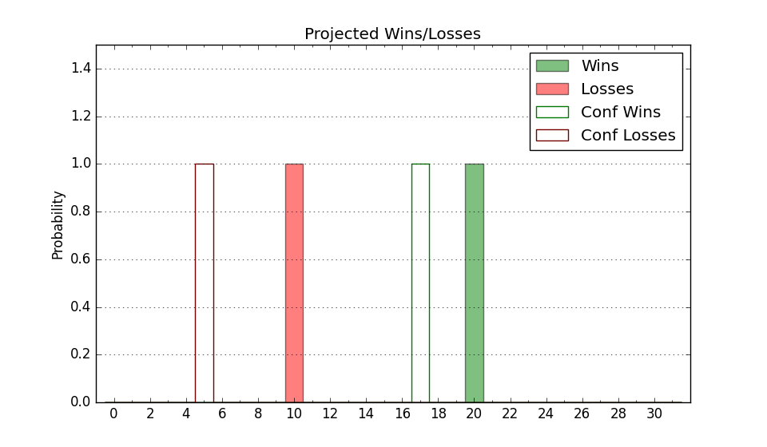

| Home | Game Probabilities | Conferences | Preseason Predictions | Odds Charts | NCAA Tournament |
| City: | Nashville, Tennessee | |
| Conference: | Ohio Valley (5th)
| |
| Record: | 10-8 (Conf) 14-15 (Overall) | |
| Ratings: | Comp.: -11.1 (287th) Net: -11.1 (287th) Off: 98.3 (294th) Def: 109.3 (248th) SoR: 0.0 (129th) |
| Remaining | ||||||
|---|---|---|---|---|---|---|
| Date | Opponent | Win Prob | Pred. | |||
| Previous | Game Score | |||||
| Date | Opponent | Win Prob | Result | Off | Def | Net |
| 11/15 | @Portland (285) | 34.3% | W 75-65 | 3.3 | 22.4 | 25.8 |
| 11/17 | @Oregon (60) | 4.2% | L 67-92 | 5.5 | -8.7 | -3.3 |
| 11/24 | (N) Mercer (218) | 34.4% | L 59-60 | -12.5 | 11.5 | -1.0 |
| 11/25 | (N) Southeastern Louisiana (304) | 53.6% | W 91-77 | 21.7 | -5.4 | 16.3 |
| 11/29 | @Alabama A&M (333) | 51.4% | L 83-85 | -2.1 | -8.9 | -11.0 |
| 12/2 | Austin Peay (213) | 48.8% | W 69-65 | -6.4 | 10.8 | 4.4 |
| 12/10 | @Lipscomb (168) | 15.6% | L 71-78 | -5.0 | 6.0 | 1.0 |
| 12/13 | @Liberty (143) | 12.5% | L 52-74 | -17.3 | -0.5 | -17.7 |
| 12/19 | @Indiana St. (32) | 2.7% | L 69-90 | 2.3 | -3.2 | -0.9 |
| 12/28 | Tennessee Martin (215) | 49.0% | L 75-91 | -10.1 | -13.3 | -23.5 |
| 12/30 | Little Rock (201) | 46.1% | W 90-82 | 15.5 | 1.7 | 17.1 |
| 1/4 | @Southern Indiana (327) | 48.2% | L 67-69 | -6.8 | 0.0 | -6.7 |
| 1/6 | @Morehead St. (112) | 9.1% | L 68-78 | 9.6 | -3.6 | 5.9 |
| 1/13 | Lindenwood (358) | 88.8% | W 75-60 | -4.4 | 9.5 | 5.1 |
| 1/18 | Tennessee Tech (338) | 80.4% | W 85-53 | 34.3 | 10.7 | 45.0 |
| 1/20 | @Western Illinois (266) | 29.3% | W 58-57 | -1.0 | 8.5 | 7.4 |
| 1/27 | @Eastern Illinois (312) | 42.3% | W 64-60 | -1.4 | 11.2 | 9.8 |
| 2/1 | Morehead St. (112) | 25.4% | L 49-68 | -18.5 | -0.5 | -19.0 |
| 2/3 | Southern Indiana (327) | 76.0% | W 79-74 | 7.7 | -11.1 | -3.4 |
| 2/8 | @Lindenwood (358) | 70.0% | W 65-55 | -4.4 | 14.8 | 10.3 |
| 2/10 | @Southeast Missouri St. (350) | 63.2% | W 77-74 | 16.8 | -17.4 | -0.6 |
| 2/13 | @Tennessee Tech (338) | 54.7% | L 50-70 | -27.1 | -5.3 | -32.4 |
| 2/17 | Western Illinois (266) | 58.5% | L 61-68 | -5.7 | -10.0 | -15.7 |
| 2/22 | Eastern Illinois (312) | 71.4% | W 78-73 | 10.3 | -13.0 | -2.7 |
| 2/24 | SIU Edwardsville (289) | 65.3% | W 76-71 | -9.6 | 11.8 | 2.2 |
| 2/29 | @Little Rock (201) | 20.0% | L 60-85 | -13.4 | -7.5 | -21.0 |
| 3/2 | @Tennessee Martin (215) | 22.0% | L 87-96 | 19.4 | -19.0 | 0.4 |
| 3/6 | (N) Southern Indiana (327) | 63.2% | W 78-64 | 10.8 | 4.0 | 14.8 |
| 3/7 | (N) Western Illinois (266) | 43.4% | L 59-61 | -15.5 | 11.6 | -3.9 |
| Stats & Trends | |||||
|---|---|---|---|---|---|
| Current | Day | Week | Month | Season | |
| Composite | -11.1 | +0.1 | +0.0 | -1.3 | +1.5 |
| Comp Rank | 287 | -- | -1 | -10 | +15 |
| Net Efficiency | -11.1 | +0.1 | +0.0 | -1.3 | -- |
| Net Rank | 287 | -- | -1 | -11 | -- |
| Off Efficiency | 98.3 | +0.0 | -0.0 | -0.5 | -- |
| Off Rank | 294 | -- | +1 | -20 | -- |
| Def Efficiency | 109.3 | +0.0 | +0.0 | -0.8 | -- |
| Def Rank | 248 | -- | +3 | -3 | -- |
| SoS Rank | 338 | -- | +3 | -2 | -- |
| Exp. Wins | 14.0 | -- | -- | +0.4 | +2.8 |
| Exp. Conf Wins | 10.0 | -- | -- | -0.6 | +1.1 |
| Conf Champ Prob | 0.0 | -- | -- | -- | -8.0 |

| Advanced Stats | ||
|---|---|---|
| Stat | Value | Rank |
| Off Eff FG % | 0.474 | 282 |
| Off Ast Ratio | 0.122 | 303 |
| Off ORB% | 0.267 | 210 |
| Off TO Rate | 0.184 | 355 |
| Off FT Ratio | 0.358 | 106 |
| Def Eff FG % | 0.510 | 190 |
| Def Ast Ratio | 0.143 | 170 |
| Def ORB% | 0.326 | 330 |
| Def TO Rate | 0.149 | 154 |
| Def FT Ratio | 0.482 | 359 |